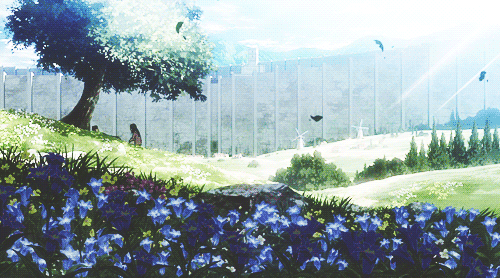

"So many... things... so little time..."
One of the most beautiful things about the complexity of our world is that, with every idea, comes new variety. With new variety comes potential for beauty, since, there is really no reason to hate anything. I think we so commonly fear things because we don't understand them, such as traditions and rules from other cultures or ways of life. This is destructive to ourselves because it can close us off to experiencing something good, and why close ourselves off to that? The key to break this is to understand things. Through understanding things, we can learn to love them because we know the reason of their existence. That said, we should try to experience every nook and cranny that the world has to offer, ever oddity can become entertaining, and every entertainment an inspiration.

Goodnight Punpun is a slice-of-life story about a cute little cartoon bird named Onodera Punpun growing up in Japan. Quickly, however, you may realize it’s about much, much more.
Written by Inio Asano, Goodnight Punpun is a manga series that gets very dark very quickly. In actuality, I believe the most accurate description of how to describe this manga would be “a look into the realities of how parental conflict, pornography, and modern societal issues affect the development of a child as they become an adult.”

One huge reason to read this story is the artwork alone. Asano’s visuals will leave you with a sense of beauty in the ordinary towns and a sense of unearthly serenity in the empty streets depicted. The backgrounds are nearly all photographs that are turned into graphic, black and white images, and this really helps to ground the wild, fast-paced story in reality and emphasizes how real the moments are. Almost opposing this directly is the cartoonish design of the main character Onodera and his family. They are all represented by this motif of a simple, humorous, and (dare I say) cute bird with sheets over their heads and little sticks for legs. This allows for a great deal of abstraction and exaggeration, which Asano uses to give us an array of eccentric expressions. These expressions are at times quite comical, but due to the dark themes of this story, I realize that such character abstraction almost fits better in representing dark emotions! The completely black inking and linework of the characters' negative emotions really brings out the severity of their situations and psychies, so it’s great inspiration for artists and really entertaining as a reader. These moments of abstraction and exaggeration exist in the humanoid characters as well, but on more rare occasions. This juxtaposition between the simplistic, childish design of Onodera and his family and the realistic (literally realistic since they’re made using real photographs) backgrounds that they find themselves in, I think, is one of the best usages of comics or manga as a storytelling medium. Not only did this let Asano create a story so grounded in present reality using actual photographs of the present, but he could use the flexible design of these bird characters to accentuate the themes they represent and the experiences they go through.
That all said, if you’re not in it for the art, I really encourage you to give Punpun a read to experience the societal themes the work explores. These themes are more important than ever for anyone to understand because they are things that I think almost every 20 something these days goes through in this world. As I said, one thing this comic deals with, and what you may notice upon first reading, is the way children’s lives are affected by conflict in parent’s relationships. Punpun’s parents have a problematic relationship at best, and it only gets worse as the story goes on. It really highlights some complications in our modern world, for example, how children can so commonly feel isolated and lacking in direction or motivation if left alone without consistent parent figures. A byproduct of this isolation is that these children may not have direction, since they don’t have consistent parent figures motivating them. This way, they are left feeling lost, chasing only fleeting goals, as happens to Punpun as we watch him grow from a 7 year old kid to a 22 year old adult.
Give Goodnight Punpun a try here!
Goodnight Punpun Volume 1 Amazon
Anime has become extremely influential in my life. Not just to inspire me to make it my career, but I think it has played a large role in me becoming a better person that I am today. Here's why.
Image Credit:
Naruki Saito
Some of my favorite anime include Jujutsu Kaisen, Demon Slayer, Bleach, FLCL, Trigun, and the one that first hooked me and started it all, Attack on Titan.

Not only does AOT (and all anime, really) have awesome visuals, it really taught me how to make an amazing storyline with complex characters and deep themes that connect to real world issues. I think Attack on Titan is pretty intense in those terms, and you'll just have to watch or read it for yourself to understand the message it's sending, but it began to make me think about the world in a new way: a more loving, appreciative way, actually.

The benefits from the stories of anime did not end there for me, though. One theme I got from AOT was to have determination despite the odds, but nowhere is that theme more apparent than in Demon Slayer. Demon Slayer is one of my favorite anime simply because of the main character, Tanjiro Kamado. His determination is unparalleled, and makes him stand out amongst the other characters, making him stronger, despite starting off weak. What this story really taught me is two huge things: respect and love of your family, and determination to stick to one goal.
Tanjiro could nearly get his arm cut off, and he's still swinging because he vowed to change his demon-sister back into a human, and doing this while putting up a physical fight against mysterious demons conveyed with stunning visuals was so inspiring.
Another anime favorite of mine, Jujutsu Kaisen, does something similar. The main character Itadori Yuji is cursed by an ancient, powerful force and has to try and fight these forces of darkness since he feels an obligation to use his strength for good.
I feel very similarly, to use my abilities for good, and I think part of that comes from seeing these characters I love go through so much just to do that. These characters stick to a goal and see it out because that’s what they chose, and their morals make them abide by that. I think having a mindset like that is extremely important, and in real life, I take it to mean seriousness about my career as an artist. Like my anime inspirations, being an artist in real life can sometimes feel like pulling things together despite millions of conflictions, but I make it happen because, like those characters, I hold it to be the most important thing in the world.

One huge reason this probably affected me is because all of these characters in these shows are teenage boys, which is when I fell in love with this stuff. This is actually a specific genre of manga (comics that virtually all anime are based off of). It is specifically targeted to young boys to teach them these exact values, while being told using things teenage boys like such as violence, fantasy, and training or exercise. I love to work out and when I think about it I am so inspired by my favorite anime characters working so hard to increase their physique and then eating amazing looking food afterwards!
What a genius strategy to not only make a career as an artist but teach such important messages at such an important time of life. One thing in particular about anime and Japanese culture in general is that it seems they have a higher regard for teens, displaying through media such as these that teens are much more prepared to become an adult than we sometimes take credit for. I think manga and anime is a brilliant model to teach culture and values in an age where the world has become so widespread and when sometimes that culture seems to be lost.
Watch some intros that I have cried over because of how beautiful they are since they encapsulate everything I want to do with my life:
JJK INTRO ONE
JJK INTRO TWO
DEMON SLAYER SWORDSMITH VILLAGE ARC INTRO